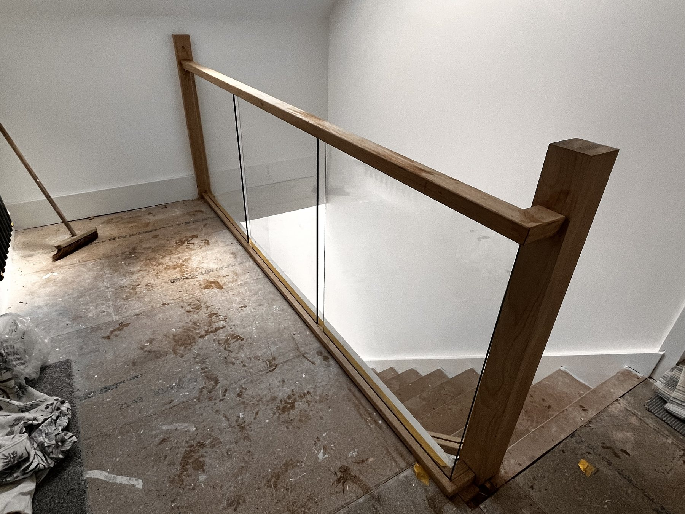
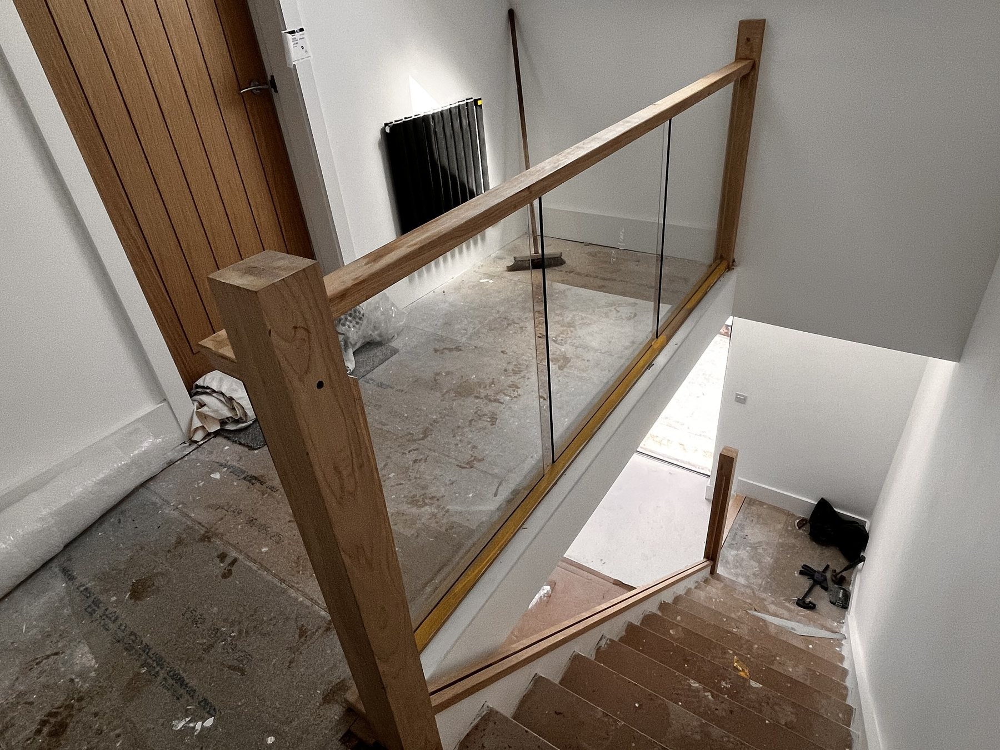
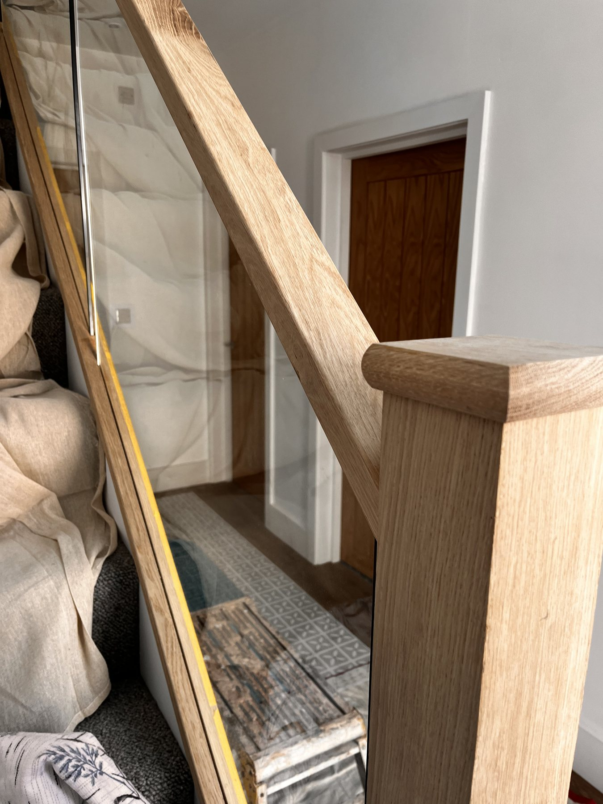
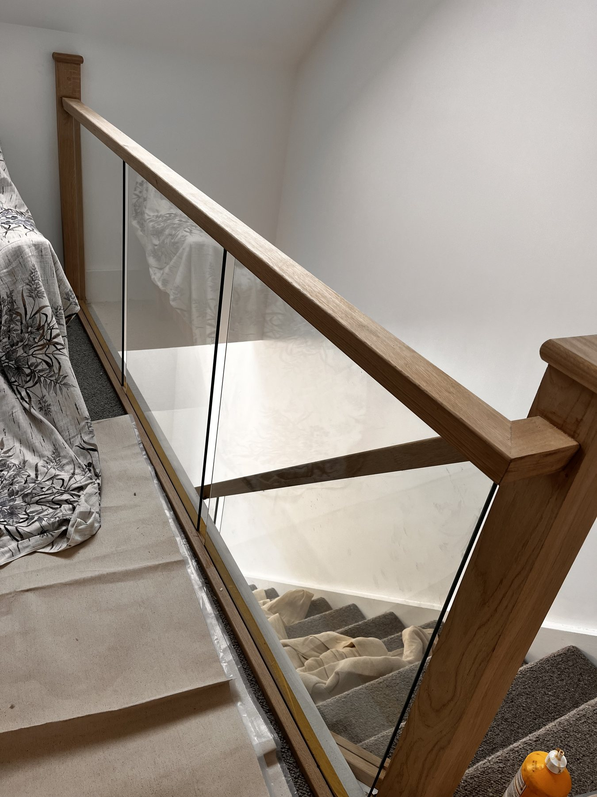
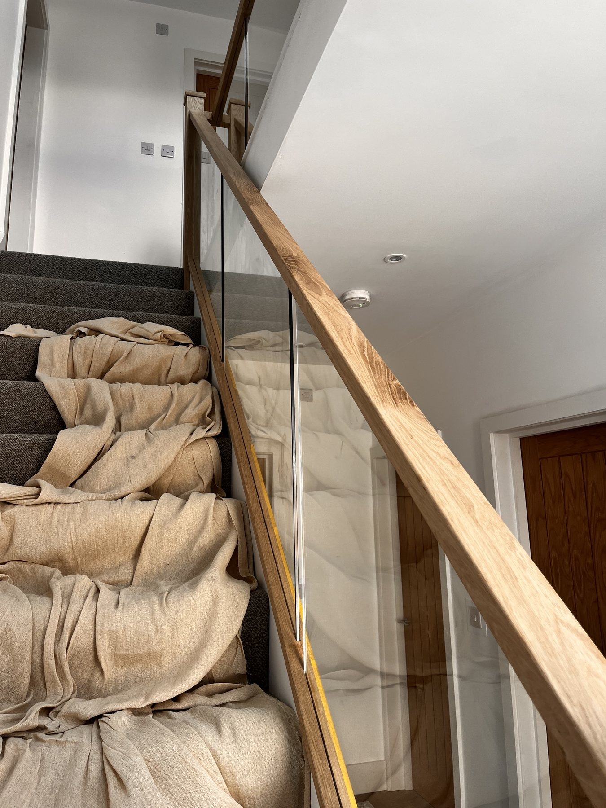

Oak & Glass Transformation
Replace dated spindles and worn timber details with oak rails, oak posts and clear glass panels for a clean, modern hallway.

Staircase renovation Wirral
Trijoin upgrades existing staircases with oak handrails, newel posts, cladding, trims and glass balustrades. Ideal for homeowners who want a brighter hallway, a modern finish and a better first impression.
A staircase renovation is usually the right option when the existing stairs are sound but look dated. Instead of removing the whole staircase, Trijoin can upgrade the visible parts with oak, glass and properly fitted joinery.
Common upgrades include oak handrails, oak newel posts, oak base rails, stair cladding, glass panels, replacement trims and finishing details around the landing and hallway.
Staircase options
Replace dated spindles and worn timber details with oak rails, oak posts and clear glass panels for a clean, modern hallway.
Open up the staircase with made-to-fit glass panels that let more light through and make the entrance feel larger.
Upgrade the parts people notice first: handrails, newel posts, base rails, trims and visible finishing details.
Combine painted white elements with oak details for a bright, modern staircase that suits many Wirral homes.
Areas covered
Wallasey, New Brighton, Birkenhead, Hoylake, Heswall, West Kirby, Bebington and surrounding areas.
Oak and glass staircase refurbishments for homeowners who want a high-quality local joinery finish. See dedicated pages for Liverpool staircase renovation and Chester staircase renovation.
Send photos of your current staircase, your location and the style you want. Trijoin can then advise on the most suitable renovation options.
Project proof





Request a staircase quote
For the quickest advice, send a few clear photos from the bottom of the stairs, the landing and any close-up details you want changed.